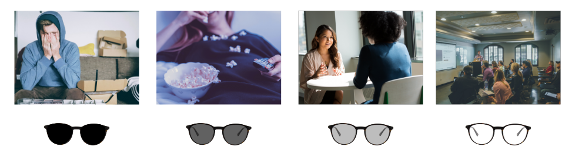
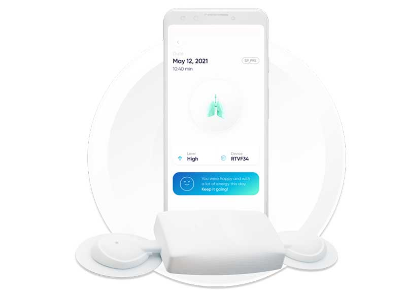
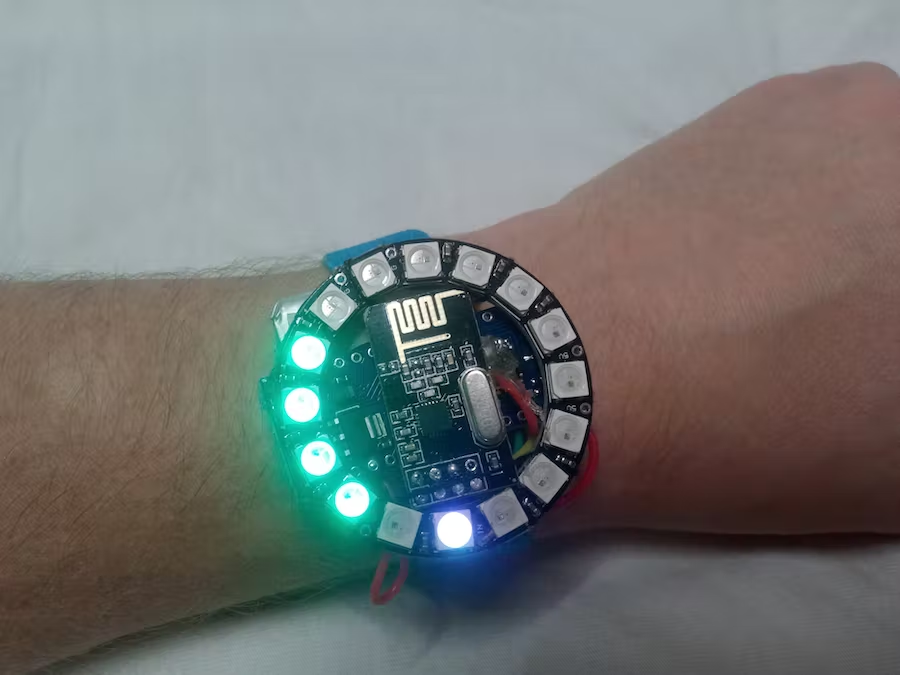
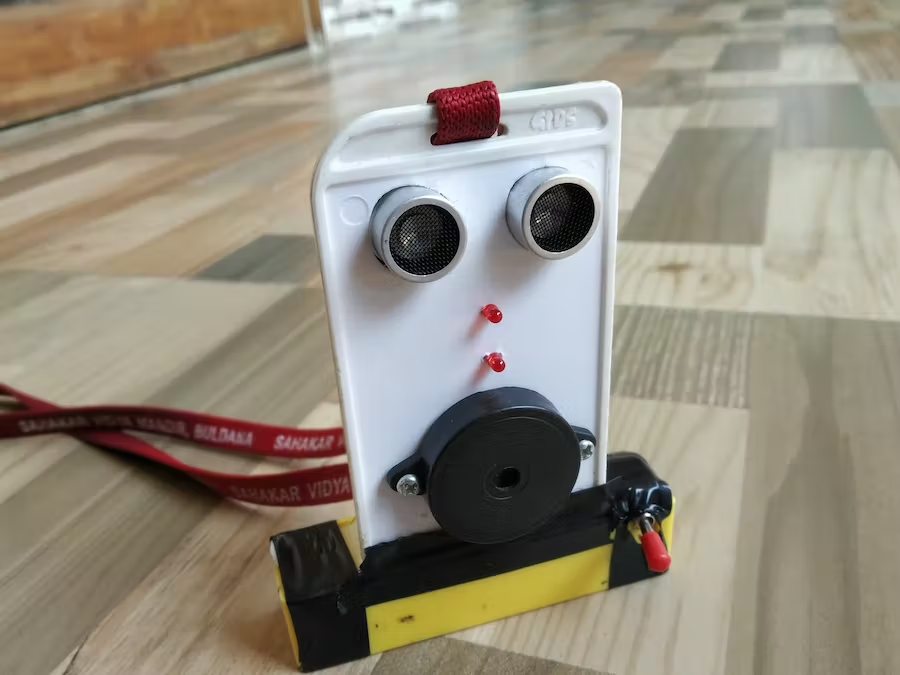

Wearables
Design your own custom wearable
https://www.diygenius.com/hacking-your-brain-waves/De wearable die ik zou ontwerpen is een zonnebril met interactieve glazen. De glazen worden gedimd afhankelijk van de hersengolven. Als een persoon heel moe is en toe is aan rust worden de glazen van de bril gedimd, zodat omstanders kunnen zien dat hij even niet gestoord wilt worden. Andersom als de glazen van de bril niet gedimd zijn kunnen mensen zien dat hij veel energie heeft en sneller een gesprek aan zal gaan.
Het meten van het energie niveau kan door de hersengolven te meten met behulp van EEG (elektro-encefalografie). Het zijn kleine banden die gemakkelijk op je hoofd zitten en activiteit meten door middel van sensoren. Deze zullen in de pootjes van de bril verwerkt zitten.
Met behulp van de metingen kunnen de volgende niveaus vast gesteld worden:
- Deltagolven: In een diepe, droomloze slaap. Pasgeborenen slapen in deze fase, volwassenen minder.
- Theta-golven: Droomslaap (REM), dit is het doel voor meditatie of zelfhypnose.
- Alfagolven: Ontspannen, dagdromen en tv kijken.
- Bètagolven: De wakkere staat. Bezig met activiteiten en gesprekken.
- Gammagolven: Hyper alert, goed voor inzichten en hoger leren.
Hieronder is het concept uitgelegd in een afbeelding:
Onderzoek
Sylvee
Respira LabsSylvee is een artificiële intelligente wearable die de long van de gebruiker kan monitoren. De wearable kan helpen bij een diagnose en behandeling van COPD, astma en corona. Sylvee is een wearable die een persoon gedurende twee weken om zijn borst kan dragen en in die tijd wordt diegene 24 uur per dag gemonitord. Ik vind het interessant om te zien dat er inmiddels zulke wearables bestaan die kunnen helpen bij het opsporen van aandoeningen en ziektes.
Heart Rate Monitor
Dmitry DziubaDit is een arduino project die ik gevonden heb op een site waar heel veel arduino projecten staan. Dit is een horloge die doormiddel van led lampjes aan geeft hoe hoog je hartslag is. De eerste versie van dit project was een hartslag meter om je borst, maar dat was niet praktisch, dus heeft de maker bedacht om een horloge te maken. Het limiet staat in dit geval op 192 BPM. Als deze hartslag bereikt is branden alle lampjes op het horloge. Ik vind dit een grappig project om te zien, het is heel eenvoudig, maar kan tegelijkertijd ook heel handig zijn.
Social Distancing Device
Chirag BadheHet laatste project dat ik gevonden heb is een pas die je om je nek kan hangen, die je waarschuwt om de 1,5 meter aan te houden tijdens deze tijden van corona. Dit project heb ik op dezelfde site als het vorige project gevonden. Ik vind dit een project die past bij de tijd waar we nu in leven. We weten allemaal dat het soms moeilijk is geweest om 1,5 meter afstand te houden en vergissen ons nog wel is in hoe ver 1,5 meter daadwerkelijk is. Deze pas waarschuwt je doormiddel van geluid en licht als je dichter dan de afstand bij iemand staat.
Reflectie
Wearables is iets wat niet meer te missen is in deze tijd. Als je in het openbaar om je heen kijkt zie je heel veel mensen met smartwatches en andere wearables. Ik vond het een interessant onderwerp vooral op medisch vlak dat er wearables zijn die helpen bij het constateren van afwijkingen of ziektes.
In de toekomst zal dit alleen nog maar uitbreiden en zullen bijvoorbeeld normale sleutels om je fiets van het slot te halen niet meer bestaan. Welke nieuwe producten er ontwikkeld zullen worden durf ik niet te zeggen, maar het zal mij waarschijnlijk weer verbazen. 20 jaar geleden hadden weinig mensen zich ook voor kunnen stellen dat veel mensen meteen digitaal horloge rond zouden lopen.
Van dit onderwerp wist ik al een aantal dingen. Nu moet ik zeggen dat de wearables op het medisch vlak mij erg verbaasd hebben en een goede indruk hebben achter gelaten.